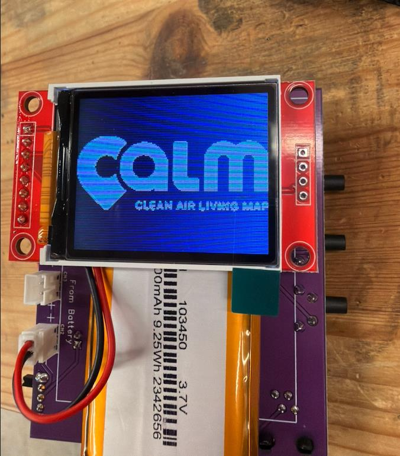
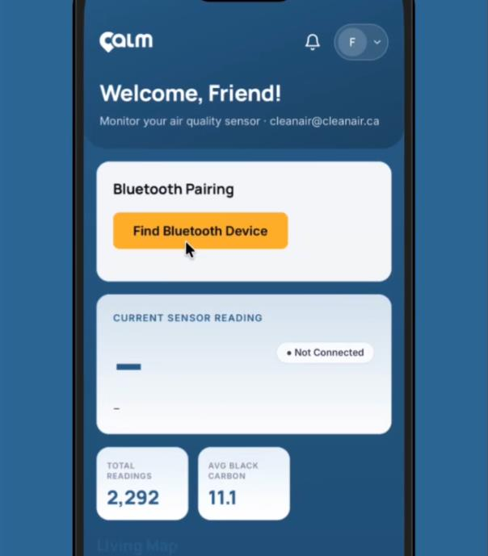
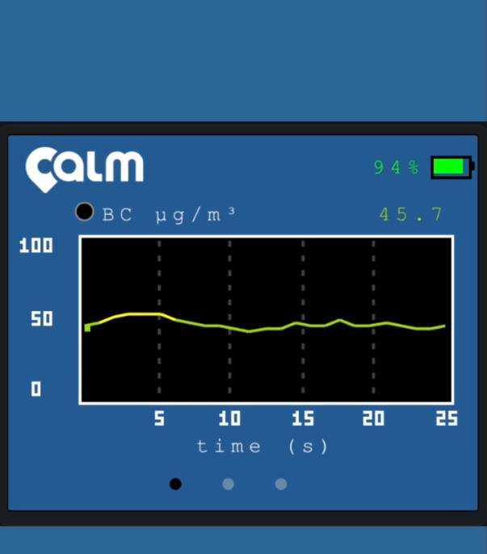
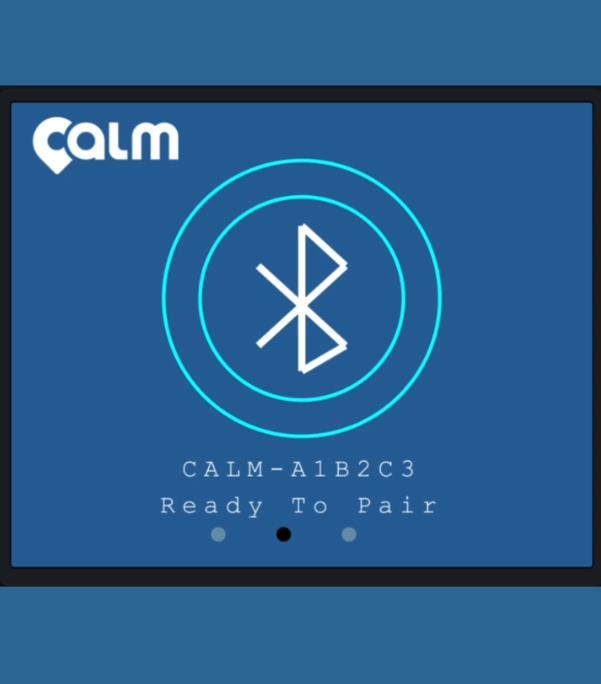
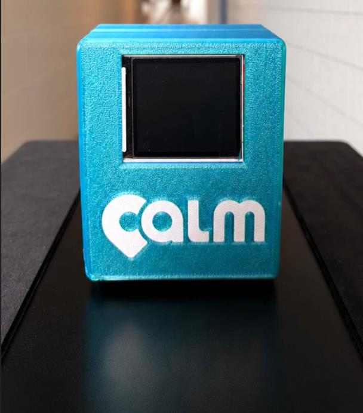

Participatory environmental sensing · 2026–ongoing
CALM
01 / Project
A complete sensing and data pipeline for collectively mapping black carbon across the Greater Toronto Area.
CALM is an ongoing interdisciplinary citizen-science project connecting environmental sensing, participatory data collection, and artistic visualization.
I designed and developed CALM’s computational framework, spanning sensor electronics and PCB, ESP32, Bluetooth, mobile application, web database, and interactive visualization.
- Role
- Computational framework and visualization
- Methods
- Electronics, ESP32, Bluetooth, mobile and web development
- Context
- York University + OCAD University





From sensor to shared map
Environmental measurement becomes a collective, situated practice.
The ESP32-to-mobile-to-web pipeline transmits participants’ black carbon measurements via Bluetooth to a mobile device and then to a web server for storage, visualization, and research.
The platform maps measurements by location, date, and time, contextualizing CALM’s dataset with open-source atmospheric data from the OpenWeather API, including particulate matter, wind, and temperature.